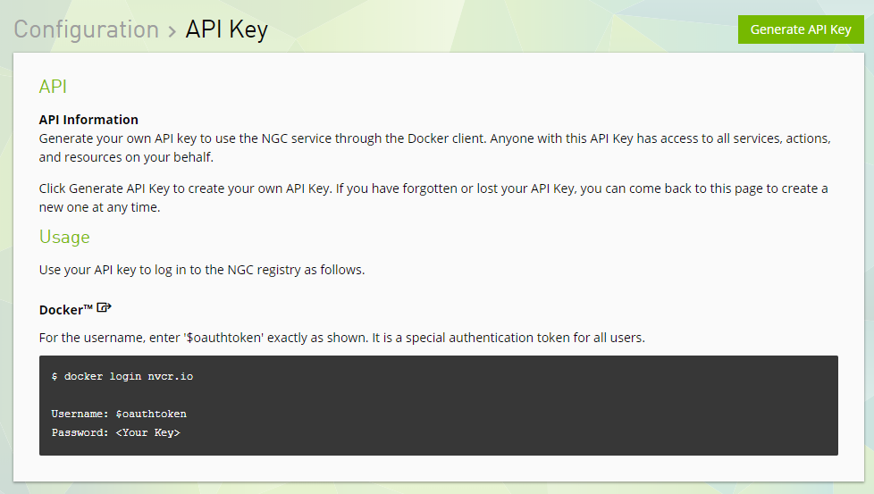

Advanced Linux Skills for Using NVIDIA Docker
| Date: | May 31, 2018 |
|---|---|
| Last Updated: | Feb 15, 2019 |
| Categories: | |
| Tags: |

Contents
Instruction
This is an instruction for those who want to know and make use of NVIDIA docker. In this section we would introduce what is docker and why we choose docker. If you have already know these, you could skip this section and get to the next one.
What is docker
Before we talk about docker, to be specific, we need to introduce you some concepts:
| Name | Meaning |
|---|---|
| Docker | A tool for managing containers. |
| Container | An isolated user-space instances. You could work with it just like with a virtual machine (VM). Different containers would not influence each other. They would not influence the base operating system (OS), either. |
| Container image | The image of the Container. This is a file that stores the content of the container. Note that a container is constructed by loading its corresponding image, but the image is not the container. |
| Commit | The realization of version controlling. When you commit, you would save your changes as a new container image locally. The newly saved image would has a version and it only store the changes based on previous version. When you load an image, the previous versions would be loaded before this assigned image get loaded. |
| Cloud | A remote space that stores several images. |
| Pull | Download an image from the cloud. |
| Push | Upload your local image to the cloud. |
| Mount | Provide an external space which is outside the container. It is just like plug an USB into a computer. |
Why using docker
To get known of the working theory of docker, you could compare it with a VM. But they are slightly different for some reasons.
| Structure of a container | Structure of a VM |
|---|---|
 |
 |
Here we show the structures of a container and that of a VM respectively. VMs allows users to run several OSes on one computer, each VM could be viewed as an isolated space with virtual hard disk and other virtual devices. Changing on one VM would not influence another VM. However, each VM requires an OS, and because their devices are virtual, the performance of these VMs could not reach the efficiency of a real machine. The container would not face such a problem. Because although containers are isolated to each other, which is like VMs’ behavior, they share the same OS and get optimized for fully elaborating the efficiency of the device. Compared to using VM to run multiple tasks, if you use containers, you would benefit from these advantages:
- Do not need to install OSes, which would save the disk space;
- Benefit from the fully optimized environment, which would not reduce the efficiency of your device;
- Easy to control the version, which could help you avoid mistaking operations and get back to the previous versions.
- Sharing environment with others, which allows multiple users on the same computer share their software and modifications.
Further Reading Materials
Here we have two documents. The first one is from DGX User Guide, and the second one is from NVIDIA GPU Cloud (NGC) User Guide. They are written with a lot of details. If you have some specific problems, maybe you could refer to these materials and get the solutions.
OK, now let’s start with our dockers!
Get started
First, you need a NVIDIA cloud account:
There are two kinds of accounts. The first one is free, you could download (pull) the public nvidia images freely, but do not have the primary space and authority to upload your own image to NVIDIA GPU cloud. The other kind is commercial account. A person could only register a commercial account via an invitation e-mail. Here we will only show how to use free account. But we will still discuss about pushing your images to cloud later.
Set up an account
You may check the official document to learn how to create an account on NGC. Or you could also read instructions here.
Note that if you are using a commercial account, you should register via the invitation e-mail. So you do not sign up here. But you still need to login and get your API key.
From your browser, go to https://ngc.nvidia.com. Click Sign Up to start the sign-up process.

Fill in all the information on the NVIDIA GPU Cloud Sign Up form, then click Sign Up. You could choose student as your role and higher education/research as your industry.

You will receive a welcome email with instructions on setting up your account access. Follow the instructions and verify your account.

Go to https://ngc.nvidia.com again, now you could login. After logging in, the website opens to the NGC Registry page.

Click Get API Key button in the right of the page, and you would see such a page. You could already see your username here. In fact, all users share the same username.

Click Generate API Key button, and you would see your key, i.e. the password. Remember to save the key somewhere (for example, in your email box), otherwise you may lose your previous work especially when you have a commercial key.
Commands
Login with docker
Open your Bash (Linux shell), and type
$ cd ~
$ sudo nvidia-docker login nvcr.io
Then you would be required to provide the username and password. The user name must be $oauthtoken, and the key is specified for your account (free or commercial). After typing the correct information, you would see the information that you have succeeded to log in. In fact, you would not need to log in from now on, unless you want to change your account.
Get full authority for you configuration file
If you have used docker, you may have your configuration file in your user folder. However, maybe you have no authority if you do not deal with this problem. Now lets use these commands to get the full authority.
$ cd ~
$ sudo chmod 777 .docker
$ sudo chmod 777 .docker/*.*
After that, if you are in the user group nvidia-docker and docker, you would not need to add sudo prefix before your commands when using docker.
Pull a docker image from NGC
You could check your Registry on NGC and choose a docker image as you like. For example, if we are interested in caffe, we may use such command to get the newest container:
$ nvidia-docker pull nvcr.io/nvidia/caffe:18.05-py2
Waiting for a few minutes, the image would be downloaded (if failed, try to add sudo before this command).
Check your image and run it
We could use this command to check your available images
$ nvidia-docker images
Each image has a unique ID which is important and we would discuss about it later. Take caffe as an example, if we had downloaded caffe:18.05-py2, and we may use this command to run it:
$ nvidia-docker run --rm -it -v local_dir:container_dir nvcr.io/nvidia/caffe:18.05-py2
Let’s discuss about what do these options means:
--rm: Clear the container from the memory after exiting;-it: Make the response of the container displayed on the current screen;-v local_dir:container_dir: Map the local directory to that in the container. This is what we call “mount”. We could use more than one mount option;nvcr.io/nvidia/caffe:18.05-py2: The name of the container image.
We may see the some returned information once we get into the docker space successfully.
Save a docker image locally
We use commit command to save the docker. Note that once the docker is running, any modification would be recorded in the container. But if we exit from the container without saving it, we would lose these works. To save the container image, we need to preserve the running docker and open another session. Then we use this command outside the container:
$ nvidia-docker ps -a
This command is used to show the current running docker sessions. We need to use this command to identify the container ID of the running session. This ID would be different from the original image with which we start. By remembering the ID, we could save the image by
$ nvidia-docker commit container_ID new_container_image:tag
The second parameter is the ID which we get from the previous command. The last parameter is the name of the new image. The part after the : symbol is the tag which is usually used to record the version number.
Terminate / Remove a container
Sometimes we may need to terminate a docker manually. For example, if we forget to add --rm option to run command. In this case we need to find the running sessions. Use such a command to find the ID of the running container.
$ nvidia-docker ps -a
Then use this command to terminate it
$ nvidia-docker kill container_ID
Also we could use this command to remove a container image. Note that this command would not be undone, so you need to confirm that you are not making mistakes before using this command:
$ nvidia-docker rmi container_ID
Save the container in the cloud
Use this command to save your own image. Generally this image should be what you have committed before.
$ nvidia-docker push nvcr.io/project_name/image_name:tag
The name begins with nvcr.io and you could use your own name as you like. Since your profile is defined by your key, you do not need to worry about providing further information. Note that all images that could be pushed to the cloud need to has a prefix like nvcr.io/project_name/ where the project name is given by your account. It should be in the lower case.
Use the GUI in docker
We know that we could not use GUI in docker without specific configurations. These settings are different when we use docker locally or use docker via a remote access.
Locally
When we use the computer directly, we need to use commands like these:
$ xhost +
$ nvidia-docker run --rm -it -e DISPLAY -v /tmp/.X11-unix:/tmp/.X11-unix -v local_dir:container_dir nvcr.io/nvidia/caffe:18.05-py2
The first command is xhost + which enables your login session as the X11 server. It has to be run before we run the docker. Then the second command has two options required for running GUI:
-e DISPLAY: Use the environmental parameter$DISPLAYfrom the host device, which means return the GUI to the current screen;-v /tmp/.X11-unix:/tmp/.X11-unix: Map (mount) the X11 program into the container so that it could returns the X11 windows;
Remote
Similar to what we do in local case, we just need a small modification for the commands.
First, use ipconfig (on Linux should be ifconfig) to check our IP address from the client side.
Then, use these commands:
$ xhost +
$ nvidia-docker run --rm -it -e DISPLAY=xx.xx.xx.xx:0 -v /tmp/.X11-unix:/tmp/.X11-unix -v local_dir:container_dir nvcr.io/nvidia/caffe:18.05-py2
where xx.xx.xx.xx is the IP address of the client. :0 is the port number which corresponds to the settings of X11. Then we should get into the container successfully and be able to test the GUI.
In fact, I have prepared an image named matlab-caffe:0.90 for you all. It is equipped with matlab, firefox, gedit, gvim and xpdf. You could run it and check the performance of GUI by yourself. I have an example for you:
$ xhost +
$ nvidia-docker run --rm -it -e DISPLAY=172.25.xx.xx:0 -v /tmp/.X11-unix:/tmp/.X11-unix -v ~:/homelocal matlab-caffe:0.90
$ firefox &
$ matlab &